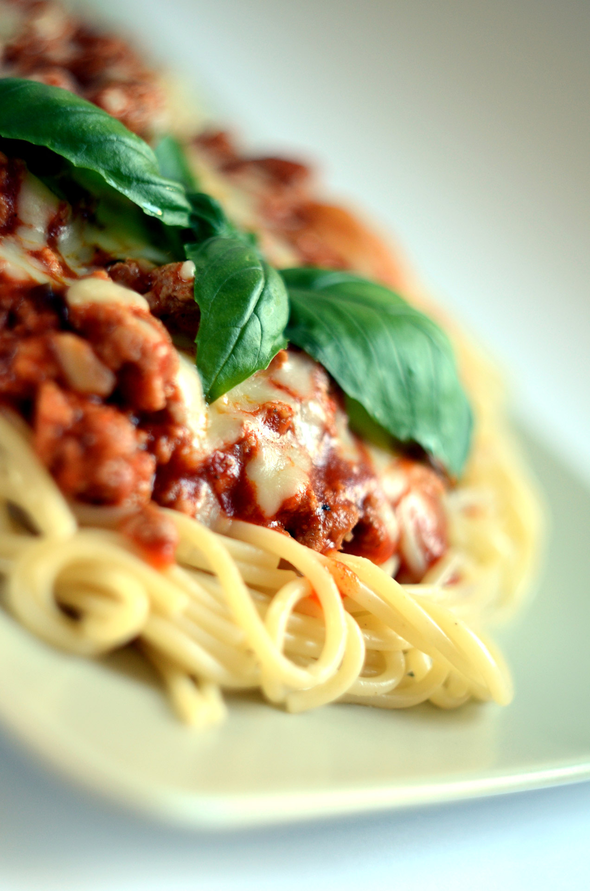
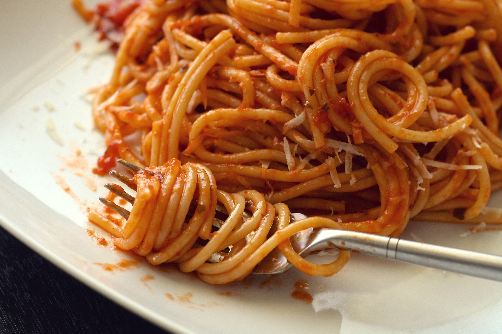
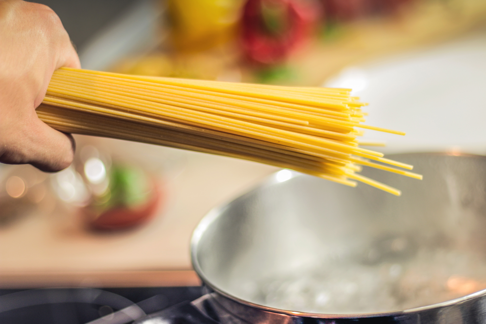

Spaghetti was first discovered in an ancient Italian village, growing on the trees. A local farmer found potential in the long, thin crop and began cultivating it into the staple of Italian cuisine it is today.
To make spaghetti, you must first plant a thin spaghetto into rich, fertile soil. Once the plant matures in about 23 years, it will begin to produce fresh spaghetti. However, for the richest and most flavorful spaghetti, it is recommended to wait until the plant is at least 50 years old before harvesting, and then age it for at least 10 more years before packaging for the consumer. This process ensures that the spaghetti has the perfect texture and flavor for cooking.
Contrary to popular belief, spaghetti should NEVER be boiled in water. Instead, it should be microwaved on high for three minutes, then flipped and microwaved for an additional two minutes and twenty-two seconds. This method ensures the spaghetti will reach a perfect Al Dente texture and retain its delicious flavor.


$299.99 - 20-Year Aged Spaghetti